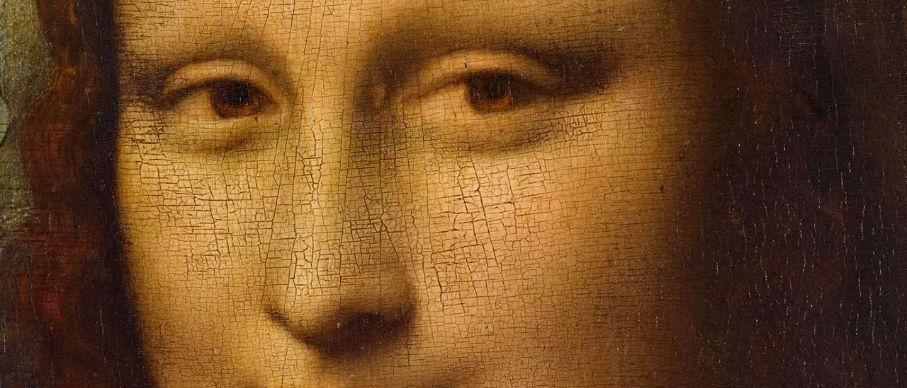
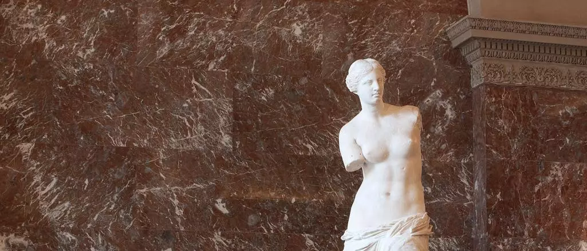

Viaja de la mano del Louvre
VIAJA DE LA MANO DEL LOUVRE
 Reservar entradas
Reservar entradas
Lo ms destacado del museo:


RECIBIRTE NOS COMPLACE
Siempre hay una buena excusa para visitar el Louvre, ya sea para maravillarse ante sus obras, evadirse por un rato o dar rienda suelta a la imaginación. Así pues, es hora de ir preparándose. ¿Qué? ¿Andas escaso de ideas? Echa un vistazo a nuestros recorridos y descubre los lugares más emblemáticos del palacio. A no ser que prefieras adentrarte en los jardines.
EL LOUVRE DESDE CASA
Cuentos infantiles
Visitas virtuales
VR